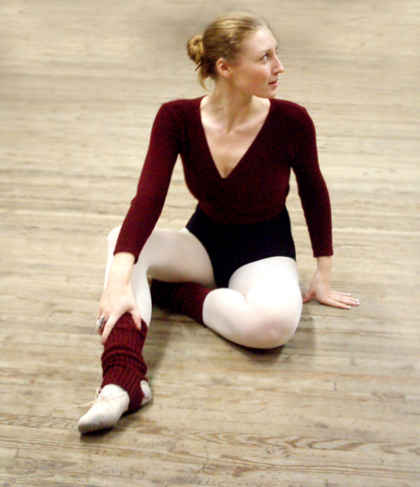
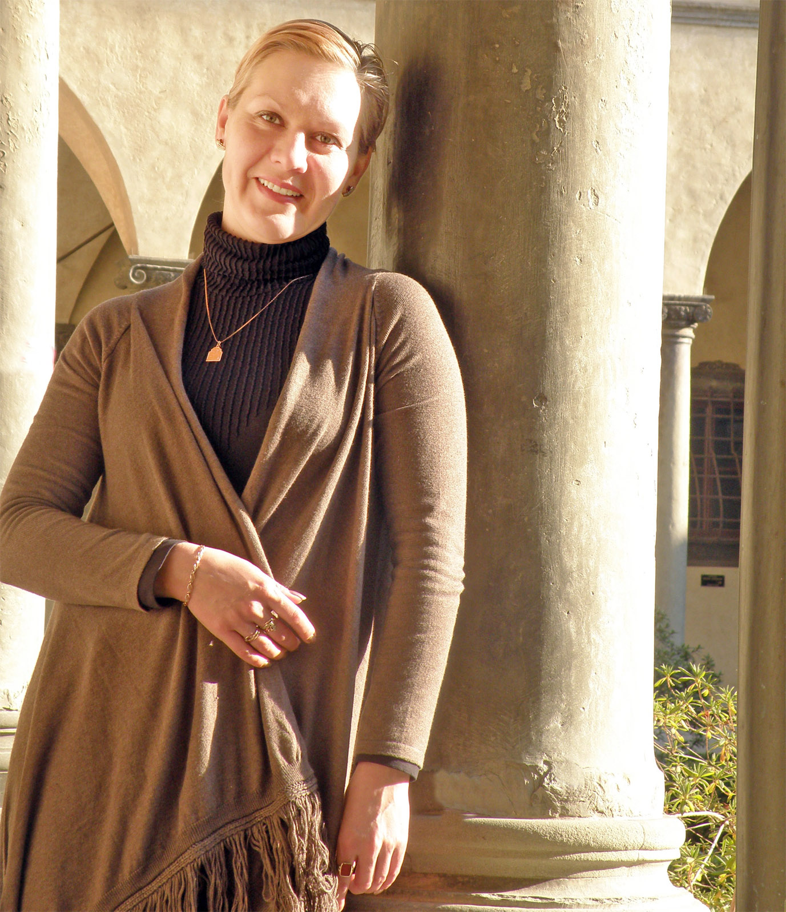

Педагоги
Юлия Белянчикова
«Стремись к невозможному, чтобы добиться возможного!»
Когда любишь что-то, по-настоящему - нет ничего невозможного! Главное – верить в себя, найти свой собственный путь, и не сворачивать с него, несмотря ни на какие жизненные преграды.
Профессия танцовщика требует колоссальных физических, эмоциональных затрат и «железного» здоровья. Когда-то, невозможность больше танцевать стала для меня личной маленькой трагедией, но… Ничто не происходит просто так – я встретила замечательную балерину и педагога, Юлию Медведеву, под ее руководством проработала 5 лет педагогом-хореографом в балетно-хореографической школе «Этуаль», окончила Киевский национальный университет культуры и искусств (кафедра классической хореографии) и... заново влюбилась в балет! Но теперь уже как педагог.
Конечно, педагогика классического балета – достаточно консервативная дисциплина. Тем не менее, меня всегда интересуют новые методики и наработки, в том числе и из других танцевальных направлений, как для детей, так и для взрослых, решивших заняться балетом уже в сознательном возрасте. Ведь главное в искусстве танца – не просто выучить балетные па, главное – суметь выразить себя, свои чувства и эмоции через движение, движение уверенного, сильного, красивого тела. Наверное поэтому, когда меня спрашивают о моей профессии, я улыбаюсь и отвечаю: «Это самая замечательная профессия – делать мир лучше! ».

Татьяна Рылеева
"В каждой душе есть место прекрасному!"
Танцем я начала заниматься еще в раннем детстве, в танцевальной студии, а затем бабушка отвела меня в Киевское государственное хореографическое училище. Будущее моё было предрешено - танец стал моей профессией и моей любовью! 20 лет я проработала в Киевском академическом театре оперетты. За эти годы сыграны десятки спектаклей, исполнено множество танцевальных партий, я работала со многими интересными балетмейстерами, сотрудничество с которыми существенно обогатило мой хореографический опыт.
Педагогическая деятельность увлекла меня ещё 14 лет назад. В то время, будучи артисткой балета, я начала преподавать детскую хореографию. Не имея педагогического образования, я решила заочно учиться в Киевском национальном университете культуры и искусств, где получила не только отменный багаж знаний, но и красный диплом балетмейстера, педагога специальных дисциплин.
Танец - это вся моя жизнь! Искусство танца – одно из самых красивых, загадочных и гармоничных, где грациозность пленяет и восхищает, но граничит с трудом и упорством до "седьмого пота"! Сейчас, когда существует такое разнообразие танцевальных стилей, мне очень лестно, что я преподаю именно классический танец - азбуку, помогающую постичь любые высоты хореографического искусства! И мне очень хочется поделиться со всеми желающими своей любовью - любовью к Танцу!